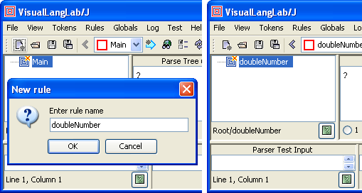
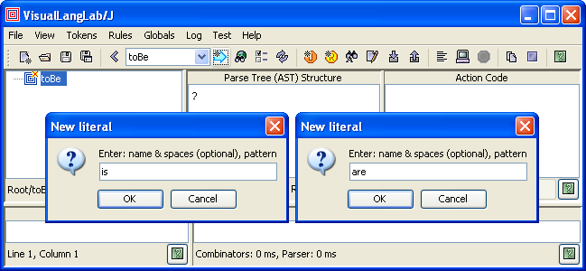
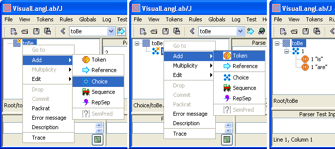
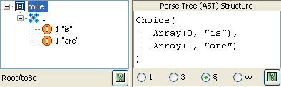
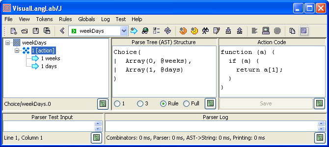
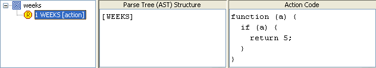
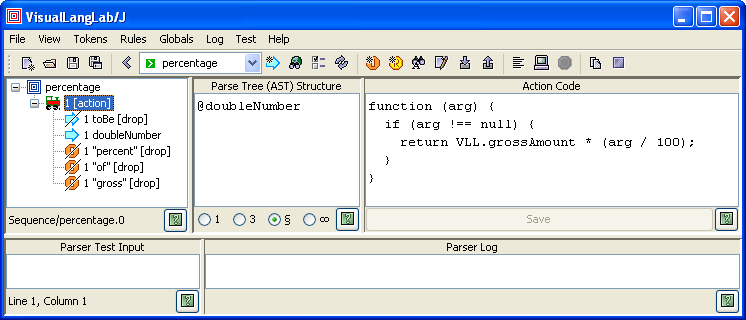

VisualLangLab is a visual parser-generator IDE for developing parsers without code or scripts of any kind. Parser-rules are depicted as visual grammar-trees with intuitive icons for different node types. This tutorial highlights VisualLangLab's features by recreating the Payroll External DSL described on page 240 of Programming Scala. The following figures show how it represents some rules of that parser.
| amount | days | deductItems | deductKind |
|---|---|---|---|
|
|
|
|
The grammar-trees are executable, and can be run at any time at the click of a button. No other skills or tools are needed. This simplifies testing, promotes an iterative-incremental development process, and speeds up development manyfold. VisualLangLab uses Scala's parser combinator functions to turn each grammar-tree directly into a Parser at run-time — there is no generated-code or other intermediate representation. Parser generation (this approach) is much simpler and faster than anything based on code-generation.
The grammar can be saved as a XML file that can be reloaded for further editing and testing. An API enables user-written programs (in Scala or Java) to load the saved XML file and regenerate the parser.
A comparison between this approach and hand-coded Scala parsers can be found in Pros and Cons below.
A simpler tutorial is available at VisualLangLab - Grammar without Tears.
def ... : Parser[...] = ...
is a parser-rule. Parser-rule and grammar-tree are generally synonymous terms.To run VisualLangLab, just download VLLS-All.jar and double-click it in a file-browser. Linux, Mac OS, and UNIX users will have to enable execution first (chmod +x VisualLangLab.jar). Another file, VLLS.zip, which contains the documentation files, sample grammars, etc. should also be downloaded.
When started, VisualLangLab displays the GUI shown in Figure-2 below. The menus and buttons are explained as needed, but a full description can also be found at The GUI. All toolbar buttons have tool-tip texts that explain their use.

Figure-2. The VisualLangLab GUI
The display areas of the GUI are used as described below.
The only prerequisite for running VisualLangLab as described above is a 6.0+ JRE. But if you want to use the VisualLangLab API to develop standalone applications, a 2.9.0+ Scala installation is required.
In the book, the parser-rules are organized in top-down fashion. But here, we start at the bottom with doubleNumber, and work our way up, creating some of the parser-rules so as to demonstrate most of VisualLangLab's features. The complete parser is also included as the file payroll-parser-comb.vll in the grammars directory of the zip distribution.
The book's code starts by importing JavaTokenParsers and you can obtain the same effect in VisualLangLab by importing the corresponding token library. Select Tokens -> Import tokens from the main menu, or click the Import tokens () button, and choose the file TL-JavaTokenParsers.vll from the the grammars directory of the zip distribution. This token-library contains regex tokens with the same names and functionality. However, for reasons explained in JavaTokenParsers below, all the names have an underscore (_) suffix.
This is a very simple parser-rule, and just matches one token unconditionally.
To create the new rule click the New rule button
( ),
and enter doubleNumber into the dialog box presented as in Figure-3 below.
Clicking the dialog's OK button creates a new rule with just a
Root node (
),
and enter doubleNumber into the dialog box presented as in Figure-3 below.
Clicking the dialog's OK button creates a new rule with just a
Root node ( ).
).

Figure-3. Creating the doubleNumber parser-rule
Now right-click the Root node, and select Add -> Token from the popup context-menu. Another dialog with the names of available tokens is presented as shown on the left side of Figure-4 below. Select decimalNumber_ and click the OK button. Your almost-complete parser-rule should look like the right side of Figure-4 below.
Figure-4. Selecting the decimalNumber token
Finally, we need to add some action-code. Select (click) the decimalNumber token
( ), and paste the Scala code
given below into the text area under Action Code as in Figure-5
below. Click the Save button. Observe that this adds the action annotation
to the decimalNumber token.
), and paste the Scala code
given below into the text area under Action Code as in Figure-5
below. Click the Save button. Observe that this adds the action annotation
to the decimalNumber token.
(a: Any) => a match {
case null =>
case d: String => d.toDouble
}Action-code functions are explained further in Action Code below.

Figure-5. Adding action-code to the doubleNumber rule
This parser-rule uses two custom literal tokens (is and are) which must be defined first. Proceed as follows.
 icon),
enter IS,is into the dialog presented, and click the OK button
(as in Figure-6 below)
icon),
enter IS,is into the dialog presented, and click the OK button
(as in Figure-6 below)The information entered into the dialog when creating a literal contains the literal's name, and its pattern separated by a comma. You can optionally add spaces around the comma for clarity if required. The name is used to refer to the literal in rules (as seen in Figure-7 below), while the pattern is it's literal definition.

Figure-6. Creating the is and are tokens
This parser-rule uses a Choice
(the  icon) as its top-level node.
A Choice is VisualLangLab's equivalent of the
| combinator. But unlike | it accepts an arbitrary number (>= 2) of
child nodes, and returns an AST that remembers which child node matched the input
(see example below).
To create the parser, perform the following steps.
icon) as its top-level node.
A Choice is VisualLangLab's equivalent of the
| combinator. But unlike | it accepts an arbitrary number (>= 2) of
child nodes, and returns an AST that remembers which child node matched the input
(see example below).
To create the parser, perform the following steps.
),
enter toBe into the dialog presented, and click its OK button) and select
Add -> Choice from the context menu. A Choice node
() is added to the root node
(as in the left and middle parts of Figure-7 below)Your toBe parser-rule should now look like the one on the right side of Figure-7 below.

Figure-7. The toBe parser
The grammar-tree's node icons are designed to be intuitive, but you can find a guide to all the icons in Grammar Tree Icons and Annotations
This parser-rule uses a Sequence
(the  icon) as its top-level node.
A Sequence is VisualLangLab's equivalent of
the ~, <~, and ~> combinators. But unlike the ~ family,
it accepts an arbitrary number (>= 2) of child nodes,
and the AST returned is just a
icon) as its top-level node.
A Sequence is VisualLangLab's equivalent of
the ~, <~, and ~> combinators. But unlike the ~ family,
it accepts an arbitrary number (>= 2) of child nodes,
and the AST returned is just a scala.Array which is much simpler to handle
than a nested instance of case class ~.
To create this parser, perform the following steps.
),
enter percentage into the dialog presented, and click its OK button) and select
Add -> Sequence from the context menu. A Sequence node
() is added to the root node
Examining the arrows (~> and <~) in the definition,
we can deduce that only the result of matching doubleNumber is desired to
be retained. All other tokens are to be dropped from the AST. You can drop
tokens from the sequence's AST by right-clicking each node's icon and selecting
drop from the context menu (as shown on the left side of the figure).
Remember not to drop the doubleNumber token.
Your finished parser-rule should now look like the left side of Figure-8 below.

Figure-8. The percentage parser-rule
Observe that the icons of dropped nodes are overlaid with a black line from the lower-left to the upper-right. The annotation drop is also added after the name of the node.
Finally, add the action-code: select (click) the Sequence icon
(), and paste the Javascript code
given below into the text area under Action Code. Then click the Save button.
function (arg) {
if (arg !== null) {
return VLL.grossAmount * (arg / 100);
}
}Though different from the original text, this action function is actually functionally equivalent, as explained in Action Code below. Your finished parser-rule should look like the one in Figure-8 above.
This parser-rule uses a custom regex token (days?) which must be defined first. Proceed as follows.
 icon),
enter DAYS,days? into the dialog presented, and click the OK button
(as in Figure-9 below). Here days? is a regular-expression
Pattern),
enter days into the dialog presented, and click its OK button)
and select Add -> Token from the context menu.
Select DAYS from the dropdown list, and click the OK button
icon),
enter DAYS,days? into the dialog presented, and click the OK button
(as in Figure-9 below). Here days? is a regular-expression
Pattern),
enter days into the dialog presented, and click its OK button)
and select Add -> Token from the context menu.
Select DAYS from the dropdown list, and click the OK button

Figure-9. Creating the is and are tokens
Finally, add the action-code by selecting he DAYS icon
(), and pasting the Scala code
given below into the text area under Action Code. Then click the Save button.
(a: Any) => a match {
case null =>
case _ => 1
}Action-code function design and use is explained in Action Code below. Your finished parser-rule should look like the one on the right side of Figure-9 above.
A full section on testing comes later, this section demonstrates the simplicity and power of VisualLangLab's manual testing facilities. It shows how you can effortlessly validate every little addition or change without using or learning any other skills or tools.
To manually test doubleNumber proceed as follows. Use the toolbar's combo box to select doubleNumber as in Figure-10 below.
 )
)If you do not see any red text (as in Figure-12 below) in the Parser Log area, your parser executed without errors. But that alone is not enough, you should verify that the result returned (the 25 in Figure-10, for example) is the value expected.

Figure-10. Testing the doubleNumber parser
The parser's result or AST is on the third line (after the result follows:). The previous two lines of output contain performance information that should be ignored. This test passes as 25 (last line under Parser Log) is the expected result.
Before you start to enter test data for toBe take a moment to understand
the structure of its output. All parser-rules return an
abstract syntax tree (or AST)
whose structure depends on the arrangement and properties of the grammar-tree's constituent nodes
as explained in AST Structure.
The text area under Parse Tree (AST) Structure displays the expected AST
structure of the selected grammar-tree node. Figure-11 below tells you that the returned
result is one of two scala.Pair objects (depending on what was found in the input).

Figure-11. The AST of the toBe parser-rule
Figure-12 below shows the result of exercising toBe with three different inputs: is, are, and other.
 |
 |
| Figure-12. Validating toBe with different inputs |
This set of tests too pass as all three test cases produce the expected result.
The remaining parser-rules, except one that uses a repsep and
is described fully below, present no new difficulties and
we leave them as an exercise for the reader.
You can verify your creation by comparing it with the saved-grammar file
payroll-parser-comb.vll in the grammars directory of the zip distribution.
This parser-rule uses a RepSep
(the  icon) as its top-level node.
To create this rule proceed as follows.
icon) as its top-level node.
To create this rule proceed as follows.
),
enter deductItems into the dialog presented, and click its OK button) and select
Add -> RepSep from the context menu (as on the left side of Figure-13 below).
A RepSep node
() is added to the root nodeYour finished rule should look like the one on the right side of Figure-13 below.
Figure-13. The deductItems parser-rule
If you did create deductItems you will notice a little red 'x' at the top-right corner of the rule's root node. This is the error flag, and making the mouse hover over the root-node displays the nature of the problem (in the tool-tip text). Both these features can be seen on the right side of Figure-13 above.
The problem is that deductItems can return successfully without matching any input. But VisualLangLab forbids the use of such parser-rules as it is possible to create very obscure and difficult-to-diagnose errors with them. The solution, in this case, is quite simple — implant the contents of deductItems directly into it's client rule (deduct). Figure-14 below shows the required modification of deduct.

Figure-14. Modifying the deduct rule
In terms of the original parser combinator code, we made the following change.
def deduct = "minus" ~> "deductions" ~> "for" ~>
"{" ~> deductItems repsep(deductItem, "," ) <~ "}"
def deductItems = repsep(deductItem, "," )
Finally, select the RepSep node
(), and paste the Scala code
given below into the text area under Action Code as in Figure-15 below.
Click the Save button.
(a:Any) => a match {
case null =>
case ld: List[Double] => ld.foldLeft(0.0){_ + _}
}The action-code function is explained further in Action Code below. Your finished parser-rule should look like Figure-15 below.

Figure-15. Adding action-code to the deductItems rule
Note the little * next to the RepSep icon. The * indicates the multiplicity of the node — zero or more. A RepSep node can have two multiplicities: * (zero or more) and + (one or more). A RepSep node is VisualLangLab's equivalent of the repsep and rep1sep combinators. The RepSep node's multiplicity determines which one it emulates.
Grammar-tree node multiplicities and other details are explained in Annotations.
Action-code is written as anonymous funtion literals in Scala or Javascript. Both languages can be mixed freely in a parser, but each function must be written in one of the forms shown below. Semantically equivalent abbreviated forms in Scala (using _ to imply the argument) are not allowed. The name of the argument and use of whitespace characters may, however, vary.
| Scala | Javascript |
|---|---|
(arg: Any) => { ... } |
function (arg) { ... } |
The choice of language for the examples in this article is based on one criterion: presence of references to external objects. completely self-contained functions with no external references are coded in Scala, while those with external data or function references are coded in Javascript. You can find detailed guidelines at Action-Code Design.
In general, action code from the original parser code can not be used verbatim as VisualLangLab's AST structure differs in many cases. A few examples of action-code functions in Scala and Javascript are shown below. Observe that grammar-tree nodes with associated action-code have the action attribute marked next to the node's icon. To see the action-code you have to select (click) the specific node.
Because action-code functions execute in a closed environment, it is difficult to load and use custom classes (like Paycheck, Money, etc.). This is where Javascript's dynamic features help. As shown in Wrapper with Actions below, those features can be used to create Javascript objects and methods to substitute the missing native (Scala or Java) resources. This approach is frequently adequate in a limited context such as testing. More exacting situations that must load external classes must be handled via the API.
The purpose of weekDays is to check the input, and return the integer 5 if either weeks or week is found, and the integer 1 if days or day is found. As described in Action Code below, action-code functions must handle two cases: a null argument, and a non-null (real AST) argument. weekDays' action function only needs to handle the non-null argument case. (Of all the examples in this article, only the action-code in Wrapper with Actions below needs to handle the null-argument case.)
To understand the logic of the action-code you must know the structure of the AST passed in (as the argument a). The rule's AST structure is depicted in the text area under Parse Tree (AST) Structure. AST Structure describes AST structuring principles in general.

Figure-16. A Scala action-code function
The AST structure and action-code of the two subordinate rules used by weekDays (weeks and days) is shown in Figure-17 below.
|  |
 |
Since weekDays' subordinate rules return the required values (5 and 1),
its own action-code only needs to pass on the value recieved. Based on the
above details we know that the AST passed in to weekDays is one of
these two values: Pair(0,5), and Pair(0,1) (the
second member of each Pair being the value from the subordinate rules).
So weekDays merely needs to return the second member of the Pair.
Figure-18 below illustrates the action-code associated with the rule percentage.
This function uses a non-local reference VLL.grossAmount.
As described in Action-Code Design,
the symbol VLL refers to a common global object available to all action-code
functions, and should be used as a repository for all parser-specific features (methods and
functions) and state (data). Wrapper with Actions below
illustrates how VLL is equipped with required features before
testing begins.

Figure-18. A Javascript action-code function
The function does not have any setting-up role, so does not have to handle the
null-argument case. The value of arg it receives is the
output from the rule doubleNumber (see AST structure) which is a
scala.Double. It returns the computed percentage value.
Testing is much simpler in VisualLangLab than in virtually any other tool. Ad Hoc Testing - A Short Detour showed how effective ad hoc manual testing can be in certain situations. VisualLangLab also supports automated testing, and the following sections describe two different approaches for different situations.
This approach uses an additional parser-rule to wrap the main (or top-level) parser-rule with before and after scripts. The before script sets up initial conditions before the main parser-rule is invoked, and the after script validates the parse-tree returned by the main parser-rule. Figure-19 below shows details of the wrapper rule PaycheckTester used for testing this parser. To display the before and after scripts (actually parts of a single action-code function) you must select (click on) the Reference node that points to the Paycheck parser-rule.
If you have not read Action-Code Design and AST Structure, please do so now!

Figure-19. Wrapper rule for automated testing
The Javascript function with the before and after scripts is reproduced below for clarity. The setup part of the function (null-argument part) performs two functions:
grossSalary, and creates the
method salaryForDays in the global object VLL.
(Javascript's dynamic nature allows it to add data and function members
to existing objects at run-time)The test part of the code checks the structure of the parse-tree returned by the main parser, and prints out an appropriate message.
function (arg) {
if (arg === null) {
//****************************************
// SETUP actions
//****************************************
// global variables and functions ...
VLL.grossSalary = 500.0
VLL.salaryForDays = function (days) {
return VLL.grossSalary * days;
}
// Input text for parser ...
ParserTestInput.setText(
"paycheck for employee \"Buck Trends\"\n" +
"is salary for 2 weeks minus deductions for {\n" +
" federal income tax is 25. percent of gross,\n" +
" state income tax is 5. percent of gross,\n" +
" insurance premiums are 500. in gross currency,\n" +
" retirement fund contributions are 10. percent of gross\n" +
"}"
)
} else {
//****************************************
// TEST actions
//****************************************
if (arg.length === 3) {
var error = ""
var empl = arg[0];
if (empl !== "Buck Trends") {
error += "BAD empl, "
}
var gross = arg[1];
if (gross !== 5000) {
error += "BAD gross, "
}
var deduct = arg[2];
if (deduct !== 2500) {
error += "BAD deduct"
}
if (error === "") {
return "OK";
} else {
return error;
}
} else {
return "BAD AST structure";
}
}
}
To understand how this works, let's run it a few times with and
without changes to the test input as in the table below. The red text is the
changed part (in the table). To run the test after making changes
in the action-code click the Save button and wait for
a pop-up dialog to confirm that the change was accepted, click
the pop-up's OK button, and then click the Parse input
() button.
| Sample Inputs for Rule Paycheck | |
|---|---|
| Input | Result |
| No changes | OK |
| ... employee "Duck Trends" ... | BAD empl, |
| ... salary for 22 weeks minus ... | BAD gross, BAD deduct, |
| ... premiums are 900. in ... | BAD deduct |
Near the top of the script, a value called ParserTestInput is
used. This name is a reference to the GUI's JTextArea
from which the parser under test obtains input (and into
which test input is normally entered manually). More information about
this can be found under
Predefined Variables.
The example code below illustrates a JUnit test case that exercises two of the parser-rules (weekDays and Paycheck) in the parser we created earlier. The code uses the VisualLangLab API (red lines), as well as the RegexParsers interface (blue lines). The code uses the API to regenerate the parser from a saved grammar file. The grammar file used (payroll-parser-comb-noaction.vll) is a modified version of the parser described above that has all the action-code removed. Using a grammar without any actions gives better insight into the overall process, and results in more precise tests.
The test-case includes one test for each of the two parser-rules mentioned above.The test for weekDays has six separate checks. The first four checks verify that the rule accepts week, weeks, day, and days, and returns 0, 0, 1, and 1 respectively. The last two checks verify that it does not accept daily and weekly. The test for Paychecks has two checks — one without deductions and another with deductions. The data for these checks is from the code on pages 243 and 244 of the book.
import java.io.File
import org.junit.Test
import org.junit.Assert._
import org.junit.runner.JUnitCore
import vll.core.VllParsers
import scala.collection.JavaConversions._
class PayrollDSLTest {
val withDeductions = """paycheck for employee "Buck Trends"
|is salary for 2 weeks minus deductions for {
| federal income tax is 25. percent of gross,
| state income tax is 5. percent of gross,
| insurance premiums are 900. in gross currency,
| retirement fund contributions are 10. percent of gross
|}""".stripMargin
val noDeductions = """paycheck for employee "Buck Trends"
|is salary for 2 weeks minus deductions for {
|}""".stripMargin
val vllParsers = VllParsers.fromFile(new File("payroll-parser-comb-noaction.vll"))
@Test def weekDays() {
val parser = vllParsers.getParserFor("weekDays")
assertTrue(vllParsers.parseAll(parser, "week") match
{case vllParsers.Success(Pair(0, "week"), _) => true; case _ => false})
assertTrue(vllParsers.parseAll(parser, "weeks") match
{case vllParsers.Success(Pair(0, "weeks"), _) => true; case _ => false})
assertTrue(vllParsers.parseAll(parser, "day") match
{case vllParsers.Success(Pair(1, "day"), _) => true; case _ => false})
assertTrue(vllParsers.parseAll(parser, "days") match
{case vllParsers.Success(Pair(1, "days"), _) => true; case _ => false})
assertFalse(vllParsers.parseAll(parser, "daily") match
{case vllParsers.Success(_, _) => true; case _ => false})
assertFalse(vllParsers.parseAll(parser, "weekly") match
{case vllParsers.Success(_, _) => true; case _ => false})
}
@Test def paycheck() {
val parser = vllParsers.getParserFor("Paycheck")
assertTrue(vllParsers.parseAll(parser, noDeductions) match {
case vllParsers.Success(Array("\"Buck Trends\"",
Array("2", Pair(0, "weeks")), Nil), _) => true
case _ => false})
assertTrue(vllParsers.parseAll(parser, withDeductions) match {
case vllParsers.Success(Array("\"Buck Trends\"",
Array("2", Pair(0, "weeks")), List(Pair(0, "25."), Pair(0, "5."),
Pair(1, "900."), Pair(0, "10."))), _) => true
case _ => false})
}
}The tests use Scala's pattern-matching capability to verify the structure of the parse-tree returned by the parser. The redability of the AST verifying code is enhanced by the fact that the convention used for AST Structure uses standard classes from the Scala API. Either VLLS.jar or VLLS-All.jar must be on the classpath when compiling and running this code.
One of the first questions that most people have is how do I generate the parser code? The short answer is you can't; a somewhat longer one is you don't have to. Here's why:
VisualLangLab never generates any parser code — not even for its own internal use. It uses the capabilities of Parser and RegexParsers to produce Parser instances directly from grammar-trees at run-time without generating or compiling any code. The Parsers produced have all the features and properties assigned to the grammar-trees by VisualLangLab's grammar-tree editor. The same Parser-generation procedure is available to host programs through the VisualLangLab API. To use a Parser from a Scala program, proceed as follows.
VllParsers.fromFile(java.io.File) function
to create an instance of vll.core.VllParsers. This class extends the Scala API's
RegexParsers,
but has some additional VisualLangLab-specific features illustrated belowgetParserFor(String) method of the VllParsers instance
to obtain a Parser
for the top-level parser-rule (Paycheck in
the example being discussed here)parseAll(Parser,
CharSequence)
method accessed via the VllParsers instance obtained in step-2 aboveThe example code below illustrates use of VisualLangLab's extremely simple and minimal API. Only the parts in red are based on the VisualLangLab API. The parts in blue are merely using RegexParsers's familiar interface.
import java.io.File
import vll.core.VllParsers
object ArithExprWithAPI {
private def evalFactorAST(ast: Any): Float = ast match {
case Pair(0, f: String) => f.toFloat
case Pair(1, expr) => evalExprAST(expr)
}
private def evalTermAST(ast: Any): Float = ast match {
case Array(factor, list: List[_]) =>
var result: Float = evalFactorAST(factor)
list.foreach(_ match {
case Pair(0, multAST) => result *= evalFactorAST(multAST)
case Pair(1, divAST) => result /= evalFactorAST(divAST)
})
result
}
private def evalExprAST(ast: Any): Float = ast match {
case Array(term, list: List[_]) =>
var result: Float = evalTermAST(term)
list.foreach(_ match {
case Pair(0, plusAST) => result += evalTermAST(plusAST)
case Pair(1, minusAST) => result -= evalTermAST(minusAST)
})
result
}
def main(args: Array[String]) {
val vll = VllParsers.fromFile(new File("ArithExpr.vll"))
val parser = vll.getParserFor("Expr")
val parseResult = vll.parseAll(parser, "(3 + 5) / (8 - 4)")
parseResult match {
case vll.Success(resultAST, _) => println(evalExprAST(resultAST))
case vll.Failure(msg, where) => printf("Error: '%s' at line %d col %d%n",
msg, where.pos.line, where.pos.column)
}
}
}
Observe how the code navigates and interprets the parse-tree returned from parseAll().
The AST structure of each grammar-tree can
be seen in the text area under Parse Tree (AST) Structure.
Note that the API needs to load the saved grammar file from disk (see the line with
the VllParsers.fromFile() call). The grammar-file for this example can be
obtained by selecting the ArithExpr sample grammar (invoke Help -> Sample
grammars -> ArithExpr from the VisualLangLab main menu, then invoke File ->
Save As and enter ArithExpr.vll for the filename).
The API also provides other variants of this function that may be convenient in other
situations:
VllParsers.fromString(java.lang.String) - when the gramamar is available as a StringVllParsers.fromXml(scala.xml.Elem) - when the gramamar is available as an XML elementEither VLLS.jar or VLLS-All.jar must be on the classpath when compiling and running this code. You can see some more examples of the use of the API in Using the API.
The class diagram in Figure-20 below depicts
VisualLangLab's relationship with Scala's
parser combinators. Although it depends on RegexParsers, it changes
most of the functionality by overriding many of the important methods.

Figure-20. Relationship With Scala Parser Combinators
Full details of how VisualLangLab uses Scala's parser combinator library can be seen in Relationship with Scala Parse rCombinators.
VisualLangLab overrides the literal(String) and regex(Regex) methods
of Scala's
RegexParsers with versions that work with a built-in lexer. The behavior of these
versions is similar to lexers in more sophisticated parser development tools, and is described in
Simple Lexing RegexParsers.
Many example parsers in tutorials and other resources extend JavaTokenParsers, so VisualLangLab provides a token library in it's place. Those planning to use this token library should, however, note that the tokens defined in it have names ending in an underscore (_). Ending the name of a token in an underscore causes VisualLangLab's built-in lexer to be bypassed, in favor of the RegexParsers capability.
This change is required because the builtin lexer works best when the regex
definitions are distinct, and multiple regex tokens will not match the same lexeme.
But the regular expressions used in
JavaTokenParsers are such that floatingPointNumber subsumes both decimalNumber
and wholeNumber, and decimalNumber itself subsumes wholeNumber.
The table below lists the pros and cons of using VisualLangLab compared with a hand-written parser based on Scala parser combinators.
| Aspect | Pros | Cons |
|---|---|---|
| Visual | Completely visual. Code never required, except if semantic predicates are used (but they are rare) | - |
| All IDE functions provided - file, edit (tokens, rules, globals), test-run, input-output | - | |
| Lexical Analyzer | The builtin lexer works like lexical analyzer generators, but does not require any separate steps or tools | - |
| Token definitions may use the full regular-expression language of the JDK's Pattern | - | |
| Unlike RegexParsers, all literal tokens are treated as reserved keywords that have higher priority than regex tokens. The next lexeme provided by the lexer is always the longest possible part of the input that matches any known token | - | |
| RegexParsers compatible behavior can also be obtained if required | - | |
| - | Performance is probably poorer than RegexParsers though no measurements have been made | |
| AST | Defined and created automatically following a well-defined and documented convention for AST structure. The AST is complete and unambiguous, and captures every detail of how the input matched the grammar | - |
| The AST is defined using common types from the Scala API, so no specialized knowledge is needed when using AST from Scala. Programs in other JVM languages can obtain a version of the AST constructed from JVM types only (release 6.01+). | - | |
| All elements in the AST are amenable to Scala pattern matching, so AST processing is simple. Programs in other JVM languages have to deal with a mutually nested structure of arrays and lists. | - | |
| Action Code | Completely separated from grammar text. Written as function literals invoked in a well-defined and documented protocol. Action code functions may access their environment via a defined and documented set of predefined global variables. | - |
| Option of languages: Scala and Javascript | - | |
| Never required to be embedded in parser text | - | |
| - | Lexical context of the parser is not available to action code. However, since this restricts the action-code to its own sand-box it can be seen as an an advantage too. | |
| RegexParsers Compatibility | Provides token libraries for JavaTokenParsers | - |
| Defines two layers (SimpleLexingRegexParsers an Aggregates) which value-add to RegexParsers's capabilities | - | |
| The usual RegexParses interface is exposed to API users | - | |
| - | Not directly compatible, and such code can not be generated | |
| API | Parser developed in the VisualLangLab IDE may be saved to a file, and subsequently used from a host program via the API | - |
| API usable from any JVM language (release 6.01+) | - | |
| Parser does not have to be compiled or linked into host program. The parser can even be modified separately without affecting the host program (provided the AST structure is not changed) | - | |
| API based on the familiar RegexParsers interface for convenience | - | |
| Testing | Includes comprehensive builtin support for ad hoc testing. No additional tools, code, or skills are required. | - |
| Test drivers for black-box testing are easily created and run within the IDE | - | |
| Any (or all) rules can be trace-enabled at the click of a button. Even individual grammar-tree nodes can be traced. | - |